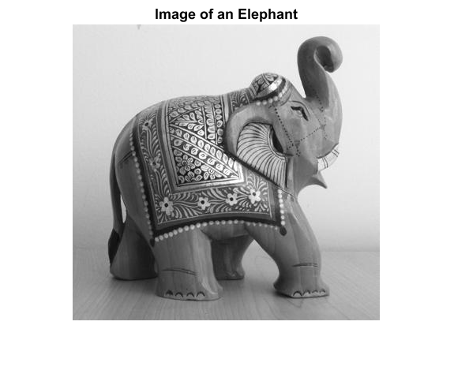

Object Detection in a Cluttered Scene Using Point Feature Matching
This example shows how to detect a particular object in a cluttered scene, given a reference image of the object.
Contents
Overview
This example presents an algorithm for detecting a specific object based on finding point correspondences between the reference and the target image. It can detect objects despite a scale change or in-plane rotation. It is also robust to small amount of out-of-plane rotation and occlusion.
This method of object detection works best for objects that exhibit non-repeating texture patterns, which give rise to unique feature matches. This technique is not likely to work well for uniformly-colored objects, or for objects containing repeating patterns. Note that this algorithm is designed for detecting a specific object, for example, the elephant in the reference image, rather than any elephant. For detecting objects of a particular category, such as people or faces, see vision.PeopleDetector and vision.CascadeObjectDetector.
Step 1: Read Images
Read the reference image containing the object of interest.
boxImage = imread('stapleRemover.jpg'); figure; imshow(boxImage); title('Image of a Box');
Read the target image containing a cluttered scene.
sceneImage = imread('clutteredDesk.jpg'); figure; imshow(sceneImage); title('Image of a Cluttered Scene');
Step 2: Detect Feature Points
Detect feature points in both images.
boxPoints = detectSURFFeatures(boxImage); scenePoints = detectSURFFeatures(sceneImage);
Visualize the strongest feature points found in the reference image.
figure; imshow(boxImage); title('100 Strongest Feature Points from Box Image'); hold on; plot(selectStrongest(boxPoints, 100));
Visualize the strongest feature points found in the target image.
figure; imshow(sceneImage); title('300 Strongest Feature Points from Scene Image'); hold on; plot(selectStrongest(scenePoints, 300));

Step 3: Extract Feature Descriptors
Extract feature descriptors at the interest points in both images.
[boxFeatures, boxPoints] = extractFeatures(boxImage, boxPoints); [sceneFeatures, scenePoints] = extractFeatures(sceneImage, scenePoints);
Step 4: Find Putative Point Matches
Match the features using their descriptors.
boxPairs = matchFeatures(boxFeatures, sceneFeatures);
Display putatively matched features.
matchedBoxPoints = boxPoints(boxPairs(:, 1), :); matchedScenePoints = scenePoints(boxPairs(:, 2), :); figure; showMatchedFeatures(boxImage, sceneImage, matchedBoxPoints, ... matchedScenePoints, 'montage'); title('Putatively Matched Points (Including Outliers)');
Step 5: Locate the Object in the Scene Using Putative Matches
estimateGeometricTransform calculates the transformation relating the matched points, while eliminating outliers. This transformation allows us to localize the object in the scene.
[tform, inlierBoxPoints, inlierScenePoints] = ... estimateGeometricTransform(matchedBoxPoints, matchedScenePoints, 'affine');
Display the matching point pairs with the outliers removed
figure; showMatchedFeatures(boxImage, sceneImage, inlierBoxPoints, ... inlierScenePoints, 'montage'); title('Matched Points (Inliers Only)');
Get the bounding polygon of the reference image.
boxPolygon = [1, 1;... % top-left size(boxImage, 2), 1;... % top-right size(boxImage, 2), size(boxImage, 1);... % bottom-right 1, size(boxImage, 1);... % bottom-left 1, 1]; % top-left again to close the polygon
Transform the polygon into the coordinate system of the target image. The transformed polygon indicates the location of the object in the scene.
newBoxPolygon = transformPointsForward(tform, boxPolygon);
Display the detected object.
figure; imshow(sceneImage); hold on; line(newBoxPolygon(:, 1), newBoxPolygon(:, 2), 'Color', 'y'); title('Detected Box');
Step 7: Detect Another Object
Detect a second object by using the same steps as before.
Read an image containing the second object of interest.
elephantImage = imread('elephant.jpg'); figure; imshow(elephantImage); title('Image of an Elephant');
Detect and visualize feature points.
elephantPoints = detectSURFFeatures(elephantImage); figure; imshow(elephantImage); hold on; plot(selectStrongest(elephantPoints, 100)); title('100 Strongest Feature Points from Elephant Image');
Extract feature descriptors.
[elephantFeatures, elephantPoints] = extractFeatures(elephantImage, elephantPoints);
Match Features
elephantPairs = matchFeatures(elephantFeatures, sceneFeatures, 'MaxRatio', 0.9);
Display putatively matched features.
matchedElephantPoints = elephantPoints(elephantPairs(:, 1), :); matchedScenePoints = scenePoints(elephantPairs(:, 2), :); figure; showMatchedFeatures(elephantImage, sceneImage, matchedElephantPoints, ... matchedScenePoints, 'montage'); title('Putatively Matched Points (Including Outliers)');
Estimate Geometric Transformation and Eliminate Outliers
[tform, inlierElephantPoints, inlierScenePoints] = ... estimateGeometricTransform(matchedElephantPoints, matchedScenePoints, 'affine'); figure; showMatchedFeatures(elephantImage, sceneImage, inlierElephantPoints, ... inlierScenePoints, 'montage'); title('Matched Points (Inliers Only)');
Display Both Objects
elephantPolygon = [1, 1;... % top-left size(elephantImage, 2), 1;... % top-right size(elephantImage, 2), size(elephantImage, 1);... % bottom-right 1, size(elephantImage, 1);... % bottom-left 1,1]; % top-left again to close the polygon newElephantPolygon = transformPointsForward(tform, elephantPolygon); figure; imshow(sceneImage); hold on; line(newBoxPolygon(:, 1), newBoxPolygon(:, 2), 'Color', 'y'); line(newElephantPolygon(:, 1), newElephantPolygon(:, 2), 'Color', 'g'); title('Detected Elephant and Box');